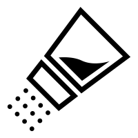

SazonArte

<
Menu Principal
Sobre nosotros
Guia Servicios
Tips a considerar
Contacto
Recetas
Regionales
Recetas
Gourmet
Recetas
Especiales
Recetas
Light
Recetas
Bebes
Esta guia tiene como objetivo dejar disponible recetas, tips para armar platos propios. Puede parecer menos sofisticado que los platos de nuestros restaurantes preferidos, pero sin duda puede ser una herramienta aliada si tienes como objetivo llevar una vida sana. En esta pagina, ecnontraras un sin fin de recetas, divididas por grupo, para los que apetecen de la
comida tipicas
, los que gustan de degustar
platos sofisticados
, aquellos que por enfermedades o tratamientos de salud necesitan seleccion de ingredientes y/o condimentos diferentes teniendo que ajustar su alimentacion a
recetas especiales
, para personas que necesitan
adelgazar o mantener la linea
y por ultimo recetas y tips para las mamas que la ayuden con la
alimentacion de sus bebes
.
Juan Jose Paso 5300 -Rosario
Argentina
Tel: +54 9 4345 673
© 2018-Sazonarte - Todos los derechos reservados